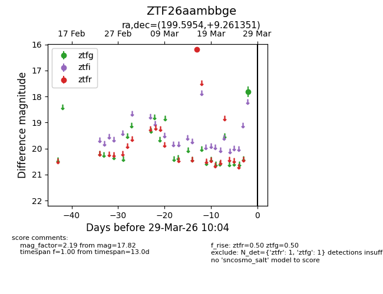
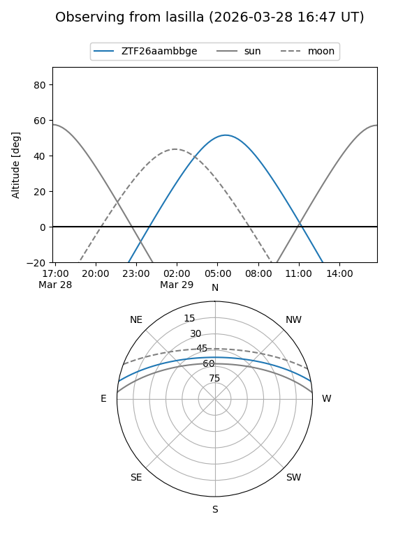
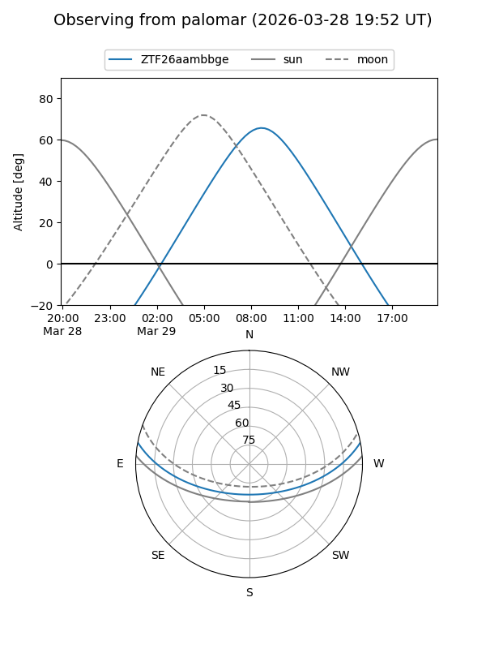

ZTF26aambbge
Target ZTF26aambbge at 2026-03-29 10:06
Aliases and brokers:
FINK: link
Lasair: link
ALeRCE: link
alt names
ZTF26aambbge (ztf,fink_ztf)
Coordinates:
equatorial (ra, dec) = 199.5954,+9.26135
equatorial (HMS+DMS) = 13:18:22.90,+09:15:40.86
galactic (l, b) = (323.7978,+71.03346)
Flags:
Photometry:
last ztfg=17.82, ztfr=16.19
1 ztfg, 1 ztfr detections
Lightcurve

Visibility


Additional plots